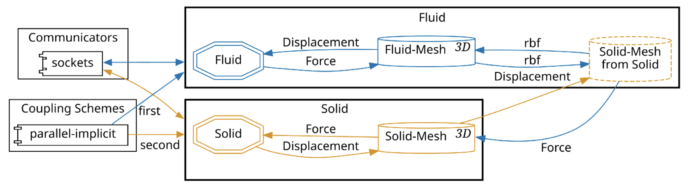
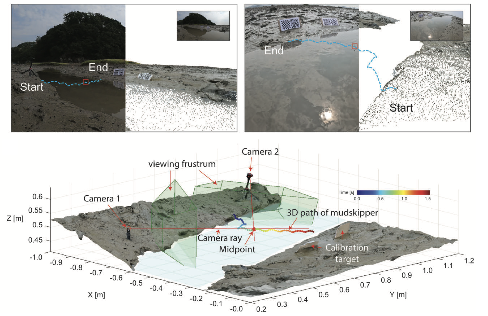
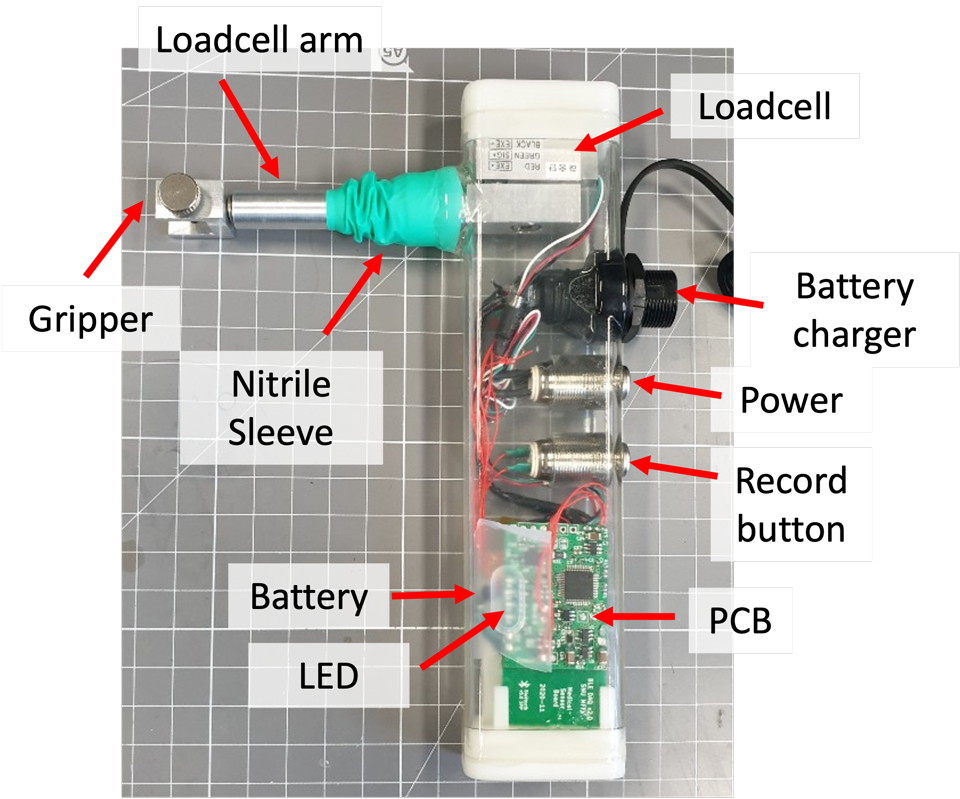
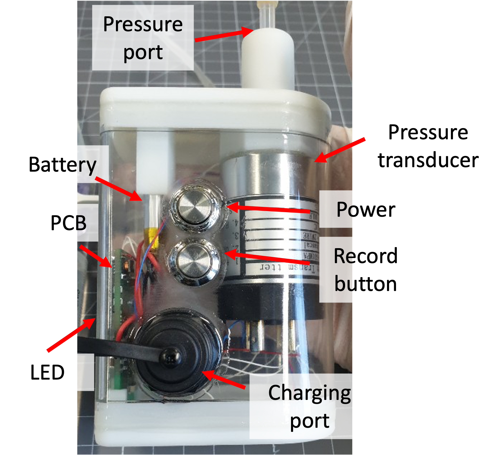
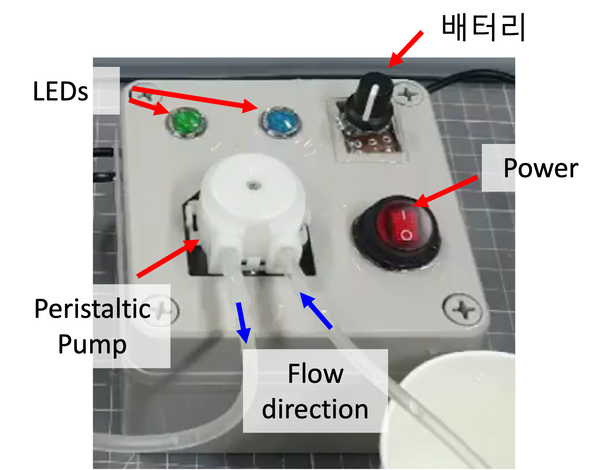
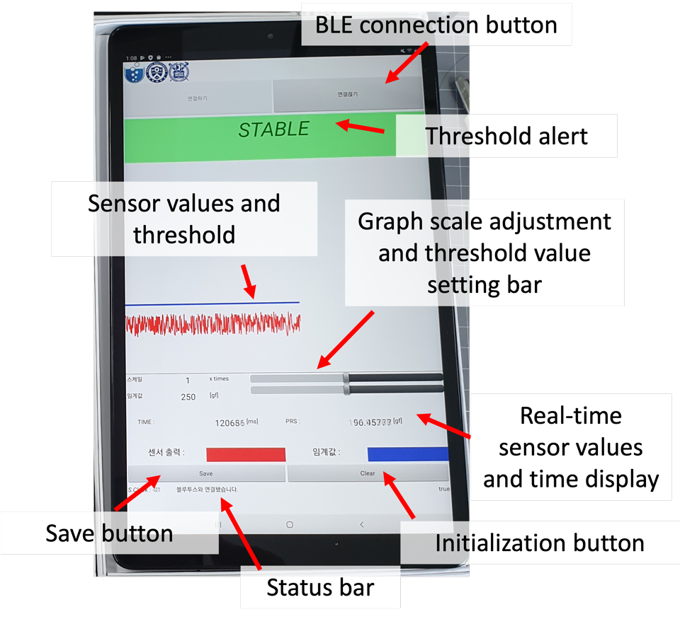
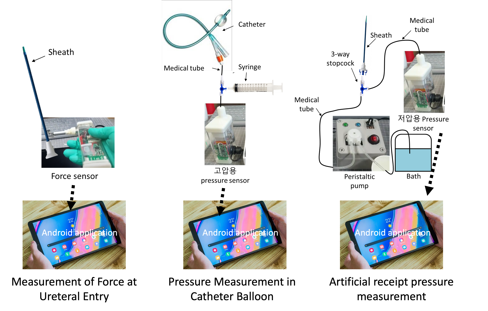

Squid-Inspired Nozzles for Enhanced Efficiency and Thrust
Passive Superpropulsion
Soft robotic propulsors are constrained by onboard power and the cost of active sensing and flow control. In this work, we demonstrate a purely passive mechanism — requiring no added control hardware — that amplifies pulsed jet impulse by more than 300% relative to a rigid nozzle, confirmed independently by PIV vorticity fields, load-cell force measurements, and two-way 3D fluid–structure interaction simulations. We term this within-pulse elastic store-release mechanism superpropulsion.
Biological Basis: Squid Funnel Elasticity
Squid use vortex-ring pulses across nearly four orders of magnitude in body size, from pygmy bobtail to colossal squid approaching 10 m. We show the squid funnel (siphon) dilates and recoils out of phase with mantle contraction — a behavior that persists after severing active neural control, indicating a substantial passive mechanical contribution. Histology reveals a collagen-rich outer sheath threefold thicker in the funnel than in the mantle, consistent with elastic load bearing. Impulse amplification peaks when nozzle-wall wave-transit time matches jet-acceleration time (τ/T = 0.2–0.4), and in vivo squid timing falls in the same window.
Robot Applications and Scalability
Tuned nozzles increase peak aerial jet height by 110%, enhance inking-inspired plume dispersion by 40%, and boost jet-propelled boat speed by 41% while reducing cost of transport by 28%, at similar electrical power draw. These gains persist after 40× miniaturization and across more than 135 nozzle and application trials — possible only through the convergence of comparative biomechanics, histology, fluid mechanics, mathematical theory, soft materials, and robotics.
Bayesian Nozzle Shape Optimization — Pulsed Jet
Beyond passive compliance, nozzle contour geometry critically shapes both inlet energy and outlet impulse. We employ multi-objective Bayesian optimization (MOBO) with Gaussian Process surrogate models to efficiently navigate the nozzle design space — parametrized by control-point splines — evaluated through high-fidelity OpenFOAM FSI simulations coupled via preCICE. This sample-efficient framework iteratively identifies Pareto-optimal geometries that maximize outlet impulse while minimizing inlet energy, without exhaustive brute-force simulation.

arXiv:2605.17319 In preparation
DARPA Rotary Propeller Thrust Optimization
The MOBO framework is extended to rotary propulsion under the DARPA Young Faculty Award program. A squid-inspired compliant nozzle sleeve fitted over a conventional rotary propeller passively reshapes the outflow in synchrony with the blade pressure cycles. Bi-objective Bayesian optimization identifies Pareto-optimal sleeve geometries that simultaneously maximize thrust and minimize input torque, with candidates evaluated experimentally via water-tank dynamometry. These demonstrations establish the viability of soft nozzle augmentation for next-generation compact underwater vehicles.
arXiv:2605.03239 In preparation US 19/568,682 US 19/568,695
Fluid–Structure Interaction of Flexible Nozzles
Optimal Flexibility for Thrust: Starting Jet
A flexible circular nozzle fabricated from silicone rubber fundamentally modifies the vortical structure of a starting jet and enhances thrust generation. Back-and-forth elastic wave propagation on the nozzle wall drives the augmented jet-vortex evolution. By combining hydrodynamic conservation equations with linearized shell theory, we derive two governing dimensionless parameters — the effective jet acceleration time \(\Pi_0\) and the effective nozzle stiffness \(\Pi_1\) — and show that jet momentum is maximized when the dimensionless wave speed \(\hat{c} = (\Pi_0^2 \Pi_1/2)^{0.5}\) reaches a critical value \(\hat{c}_\text{crit} \simeq 3.0\). At this condition, elastic energy stored during nozzle contraction is released in synchrony with the instant of jet acceleration termination, producing the largest achievable vortex circulation and hydrodynamic impulse. This work establishes the theoretical framework for optimal nozzle flexibility that underpins the entire squid-inspired propulsion program.
Impulse and Entrainment Enhancement: Pulsed Jet
Extending the FSI framework from continuous to pulsed jets, we demonstrate that the same optimal flexibility criterion holds universally for pulsed operation. Vortex rings from the flexible nozzle travel faster than their rigid counterparts due to timely release of elastic energy stored during nozzle expansion. The collapsing motion of the flexible nozzle suppresses negative exit pressure in phase with jet-driven upstream wave propagation, yielding impulse increments of ~400% and entrainment increments of ~220% relative to a rigid nozzle — substantially exceeding the gains achieved with a continuous jet (200% and 50%, respectively). This universal mechanism provides a design guideline for pulsed-jet propulsors in small-scale underwater robots. (Emerging Scholar Best Paper Prize, Top 10, JFM 2025)
Interfacial Dynamics & Robotic Development
High-Weber Interfacial Locomotion
Mudskippers are among the few fish that can move across water surfaces, using a distinctive fin-assisted "galumphing" gait that exploits surface tension, inertia, and fin thrust in concert. We investigate the interfacial hydrodynamics and 3D kinematics of mudskipper water-hopping through high-speed laboratory experiments and biological fieldwork conducted in Brunei, Borneo.
ICB 2025 In preparation
Stereo 3D Tracking in Natural Habitats
A custom stereo-camera 3D tracking system enables non-invasive pose estimation of freely-moving animals in natural mangrove habitats — the first such system deployed for mudskippers in the wild. Physical and robotic models are built to validate the discovered locomotion principles and bridge biological observation to engineering implementation.

Cavity Collapse and Timescale Coupling
In-depth hydrodynamic analysis reveals that mudskipper water-hopping operates in the high Weber–Bond (We-Bo) regime, where inertial forces dominate over surface tension and gravity. A key finding is the timescale matching between tail-fin thrust and pectoral-fin cavity collapse: the duration of tail-fin propulsion coincides with the collapse time of the air cavity formed by the pectoral fins upon water entry, enabling efficient coupling between the two propulsive elements. Flap-displacement experiments with a physical mudskipper model directly demonstrate that cavity collapse generates measurable thrust — revealing a passive thrust mechanism that operates in concert with active fin actuation.
In preparation
Amphibious Mudskipper-Inspired Robot
Guided by these biological principles, we are developing a miniaturized amphibious robotic platform capable of seamlessly switching between underwater swimming and surface hopping — replicating the mudskipper's multimodal locomotion strategy. The 60 mm prototype integrates dual propeller motors for aquatic propulsion and a fin motor for impulse-driven hopping, all coordinated by a custom 30 mm PCB embedding dual motor drivers, a gyroscope, and Bluetooth. This platform serves as a physical testbed for validating hydrodynamic principles uncovered through biological observation and physical-model experiments.
In preparation
Water-Entry Splash and Insect Vortex Recapture
The Manu jump is a Māori diving technique for maximizing water-entry splash. We show that optimal splashes emerge from two control parameters: a V-shaped entry angle (~46°) and the timing of body extension underwater (normalized time 1.1–1.5), which synchronizes cavity collapse with maximum Worthington jet acceleration in the inertia-dominated regime (Fr = 1–100). Separately, epineuston vortex recapture in Microvelia americana — one of the smallest water-walking insects — reveals that hind legs re-energize counter-rotating vortices shed by middle legs, creating a virtual pressure wall that amplifies thrust. This extends the vortex recapture principle, previously documented in aerial insects, to the unique hydrodynamic environment of the water surface.
Multiphase Flow, Vision-AI & Digital Twin
DeepBubbleVelocimetry
Standard particle tracking velocimetry breaks down in high-density bubble flows where overlapping bubbles and void fractions above ~11% prevent reliable tracking. To address this, we developed DeepBubbleVelocimetry — the first CNN-based optical flow algorithm purpose-built for bubble-laden flows. By fine-tuning the PWC-Net architecture on synthetically generated bubble image datasets, the method tracks velocity through intensity changes across image pairs rather than individual bubbles. It outperforms conventional Lucas–Kanade and Farnebäck optical flow in accuracy, runs 5× faster, and remains accurate at void fractions up to 58% where standard PTV fails entirely.
Choi*, Kim* & Park, Sci. Rep. 2022 GitHub
Annular Dual-Nozzle Liquid Column Atomization
Building on interface diagnostics, we also studied liquid column atomization driven by an annular dual-nozzle gas jet — a configuration designed to prevent nozzle clogging by eliminating backflow through an independently controlled upper gas jet. Using PIV and high-speed imaging, we identified four distinct flow regimes governed by momentum flux ratio, nozzle angle, and liquid flow rate. Gas velocity gradients (acceleration) drive atomization onset, while droplet sizes remain determined by Rayleigh–Taylor instability wavelengths regardless of the inter-nozzle momentum ratio. Operating the upper nozzle at m₁₂ ≥ 0.067 completely suppresses backflow, enabling reliable atomization with independent jet control.
Robotic Spray Coating Digital Twin
In collaboration with Daewoo Shipbuilding & Marine Engineering, we developed a physical model and high-fidelity CFD framework targeting a digital twin for robotic spray coating of ship hulls. Primary atomization of the paint spray nozzle was resolved through CFD simulation, yielding spatially resolved droplet size and velocity distributions. These distributions feed a Weber-number-based film growth rate model \(\dot{h} = B_1 \cdot d_s v_s \left(\tfrac{Q}{v_s}\right)^{\!B_2} \mathit{We}_d^{B_3}\), whose empirical coefficients and spray-angle scaling were validated against experimental data, enabling predictive control of paint film thickness for automated coating processes. A separate collaboration with Samsung Advanced Institute of Technology (SAIT) examined how superhydrophobic (SHPo) surface coatings modify bluff-body wakes; the optimal SHPo condition was found to reduce recirculation length by augmenting near-separation flow fluctuations.
Note (Daewoo Shipbuilding & Marine Engineering project) — This industry collaboration has no formal journal publication. D. Choi served as the sole research lead, independently directing all phases of the project: problem formulation, CFD modeling (ANSYS Fluent), film growth model derivation and validation, and reporting to the industrial sponsor.
Turbulent Wake
In-Line Sphere Array Wake
Multi-body wake interactions in in-line sphere arrays (Re_D = 1000, L/D = 0–3) were investigated using 2D PIV and fluorescent dye visualization in a water tunnel. Three flow regimes emerge with center-to-center spacing: steady axisymmetric gap flow (L/D < 0.7), planar-symmetric transitional wake with elevated turbulence (0.7–1.3D), and recovered planar-symmetric vortex shedding (L/D > 1.3). Downstream spheres shelter and successively weaken upstream wakes, reducing form drag along the array. Pressure distributions — and thus drag forces on each sphere — were estimated non-intrusively by integrating the PIV velocity fields via the streamwise momentum equation, without load cells.
Clinical Device Development & Medical Testing

Urological Surgery Devices
In collaboration with Prof. Kwangsuk Lee (Yonsei University College of Medicine) and Yonsei Severance Hospital, we developed two instrumented urological surgery devices: a Foley catheter removal assessment apparatus and a hydronephrosis-induction system for ureteral access. Both devices were built from scratch — custom pressure and force sensors, analog signal-conditioning PCBs, microcontroller data acquisition, and fully waterproof enclosures with Bluetooth wireless transmission for use in the sterile surgical field. The devices were validated through clinical trials at Yonsei Severance Hospital and resulted in three granted patents and one PCT patent.
Developed Devices

UASIF Force Sensor (×2)
- Range: 0–5 kgf · 1000 Hz sampling
- Attachable to UAS sheath
- Power / record button
- USB charging · Waterproof IP68
- Bluetooth BLE · Ergonomic housing

Hydraulic Pressure Sensor (×2)
- High-range: 0–1 MPa · Low-range: 0–1 kPa
- 1000 Hz sampling
- One-touch tube connection
- Power / record button
- USB charging · Waterproof IP68
- Bluetooth BLE · Ergonomic housing

Pulsatile Flow Generator (×1)
- Flow rate: 1–2 cc/s, adjustable
- Peristaltic pump mechanism
- Silicone hose compatible
- Power switch

Android Monitoring App (×2)
- Compatible with all Android devices
- Bluetooth BLE sensor connection
- Configurable threshold & alarm
(red screen + audio alert) - Data export to Excel file
- Java-based implementation

Patent Portfolio
KR 10-2020-0000288 KR 10-2020-0064729 KR 10-2020-0064731 PCT/KR2020/018848